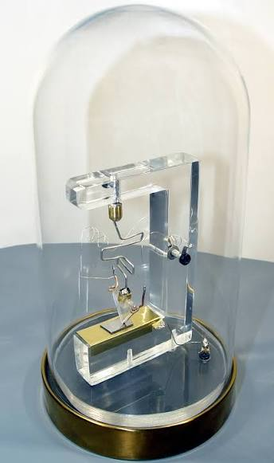
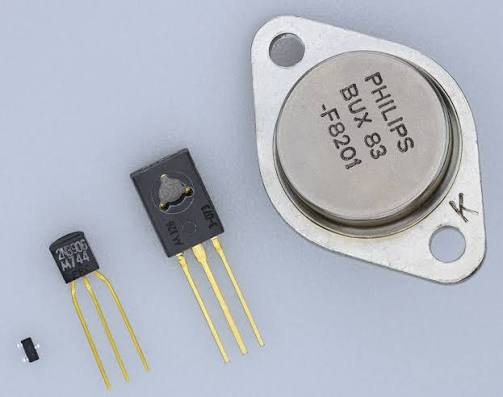
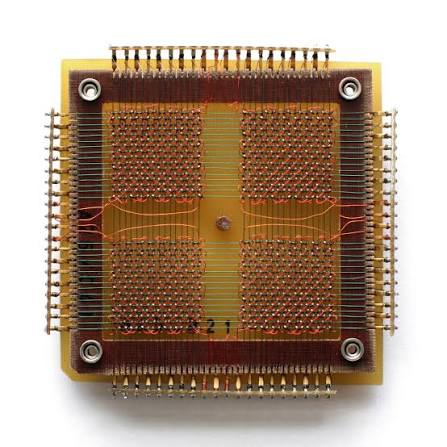
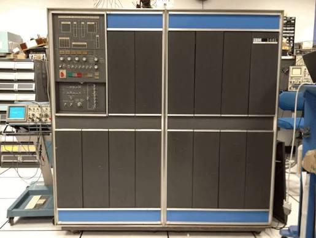
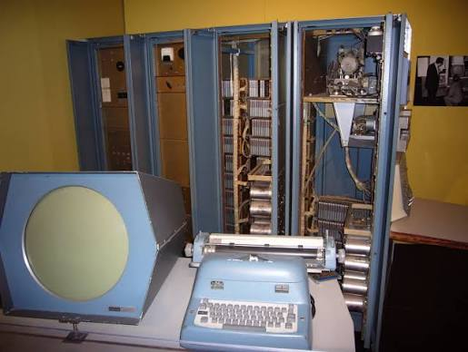
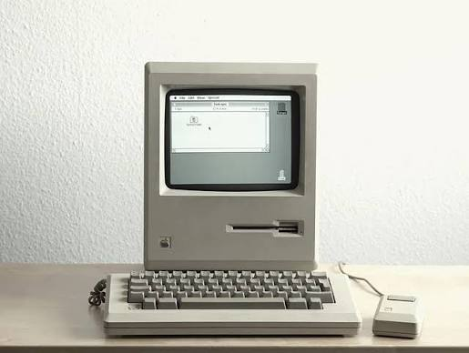

SEGUNDA GENERACION DE COMPUTADORAS (1956 - 1963) - Analisis historico y tecnico documentado sobre la revolucion del transistor, la memoria de nucleos magneticos de ferrita, el nacimiento de los discos duros y la creacion de los primeros lenguajes de programacion de alto nivel como FORTRAN y COBOL.

1. Que fue la Segunda Generacion y su Contexto Historico - La segunda generacion de computadoras se desarrollo entre los anos 1956 y 1963, caracterizada por la sustitucion universal y definitiva de las valvulas termoionicas por los transistores de estado solido en todos los circuitos logicos, registros y unidades de procesamiento. Durante la primera generacion, las computadoras eran mastodontes exclusivos de gobiernos militares y grandes laboratorios de defensa debido a su descomunal consumo electrico, su fragilidad termica y la necesidad de equipos permanentes de mantenimiento. La introduccion del transistor transformo radicalmente este panorama: las computadoras redujeron su tamano fisico a una decima parte, multiplicaron su velocidad operativa por diez, redujeron el consumo electrico en mas de un noventa por ciento y eliminaron las interrupciones constantes causadas por filamentos calcinados. Gracias a esta metamorfosis tecnologica, la computacion abandono su condicion de experimento militar para transformarse en una industria comercial mundial indispensable para corporaciones multinacionales, entidades financieras, administraciones publicas, universidades y la incipiente carrera aeroespacial de la NASA y la Guerra Fria.

2. El Transistor: La Invencion que Transformo la Electronica - El transistor fue descubierto en diciembre de 1947 en los Laboratorios Bell de Murray Hill (Nueva Jersey) por los fisicos estadounidenses John Bardeen, Walter Brattain y William Shockley, logro galardonado con el Premio Nobel de Fisica en 1956. Inicialmente concebido como un transistor de contacto puntual donde dos delgadas laminillas de oro tocaban un cristal semiconductor de germanio, Shockley desarrollo en 1951 el transistor de union bipolar (BJT) de capas p-n-p y n-p-n. En mayo de 1954, el quimico Gordon Teal de Texas Instruments creo el primer transistor comercial de silicio puro, superando la limitacion critica del germanio (que dejaba de operar a temperaturas superiores a los 75 grados Celsius) y abriendo el camino para la electronica moderna. A diferencia de las valvulas al vacio, que requerian calentar un filamento a temperaturas incandescentes para arrancar electrones de un catodo, el transistor funciona sobre fisica de estado solido: al introducir impurezas quimicas microscopicas (dopado) en el cristal semiconductor para crear portadores mayoritarios positivos (huecos) y negativos (electrones), una pequena corriente electrica aplicada a la terminal central (la base) modula instantaneamente un flujo de corriente considerablemente mayor que circula entre el emisor y el colector. Esta propiedad permitio que el transistor actuara como un interruptor binario extraordinariamente veloz capaz de cambiar entre los estados 0 y 1 en millonemas de segundo sin piezas moviles, consumiendo escasos milivatios de potencia, encendiendo al instante sin necesidad de calentamiento y garantizando una vida operativa de decadas de servicio continuo sin degradacion fisica.

3. Nuevas Tecnologias de Memoria: Nucleos de Ferrita y Discos Magneticos - La segunda generacion produjo dos avances monumentales que sepultaron para siempre las lineas de retardo de mercurio y los tubos electrostáticos: en primer lugar, la memoria de nucleos magneticos de ferrita, patentada en sus bases por An Wang y desarrollada a escala industrial por Jay Forrester en el proyecto Whirlwind del MIT a principios de los anos cincuenta. Consistia en una matriz de miles de diminutos anillos de ceramica ferromagnetica (toroides de oxido de hierro y manganeso) enhebrados a mano en una reticula cuadriculada por hilos de cobre cruzados (cables X, Y, cable de lectura o Sense y cable de inhibicion). Aprovechando la curva de histeresis magnetica, una corriente electrica fraccionada enviada simultaneamente por un hilo X y un hilo Y solo alcanzaba el umbral de magnetizacion en el punto exacto de interseccion, magnetizando el anillo en sentido horario (1) o antihorario (0). Esta memoria era completamente no volatil (no perdia la informacion al apagar el equipo), ofrecia tiempos de acceso aleatorio de pocos microsegundos y domino el mercado de memorias RAM mundiales durante mas de quince anos. En segundo lugar, el 4 de septiembre de 1956, IBM revoluciono el almacenamiento masivo con el computador RAMAC 305 y su unidad de almacenamiento IBM 350, desarrollada en el laboratorio de San Jose (California) bajo el liderazgo de Reynold B. Johnson: fue el primer disco duro comercial de la historia, compuesto por cincuenta platos de aluminio de 24 pulgadas recubiertos de pintura magnetica de oxido de hierro que giraban a 1.200 RPM en un eje vertical; un brazo robotico accionado neumaticamente subia y bajaba entre los discos para acceder a cualquier pista en un promedio de 600 milisegundos, almacenando cinco millones de caracteres alfanumericos de seis bits (aproximadamente 3,75 megabytes) y permitiendo por primera vez en la historia el acceso aleatorio directo a datos sin tener que rebobinar cintas. Asimismo, unidades de cinta magnetica de media pulgada de alta densidad como las IBM 729 (con siete pistas y velocidades de transferencia de decenas de miles de caracteres por segundo) se convirtieron en el estandar mundial para respaldo y procesamiento contable.

4. La Revolucion del Software: El Nacimiento de los Lenguajes de Alto Nivel - Hasta mediados de la decada de 1950, programar exigia una comprension intima de la circuiteria interna de cada maquina, pues se realizaba en cadenas binarias o en ensamblador dependiente del procesador. La segunda generacion transformo este paradigma al fundar la ingenieria de software y los lenguajes de alto nivel independientes del hardware: en 1957, un equipo de IBM liderado por John Backus desarrollo FORTRAN (Formula Translation) para el IBM 704; Backus creo el primer compilador optimizador, demostrando a los ingenieros que un programa escrito en formulas matematicas comprensibles para un humano podia compilarse a codigo maquina con una eficiencia que rivalizaba con el ensamblador escrito a mano, convirtiendose en el lenguaje universal de la computacion cientifica y de ingenieria. En mayo de 1959, el comite CODASYL (convocado por el Departamento de Defensa de EE.UU. e impulsado por los trabajos pioneros del lenguaje FLOW-MATIC de Grace Murray Hopper) diseno COBOL (Common Business-Oriented Language): COBOL empleo una sintaxis legible basada enteramente en vocabulario formal en ingles (con clausulas como READ, PERFORM, MULTIPLY y divisiones estructuradas de datos), convirtiendose en la columna vertebral perenne de la banca, seguros, nomina y transacciones financieras del planeta. En 1958, el cientifico John McCarthy creo LISP (List Processing) en el MIT, introduciendo la recursion matematica, la tipificacion dinamica, la recoleccion automatica de basura (Garbage Collection) y la manipulacion simbolica para la investigacion en Inteligencia Artificial. Paralelamente, el consorcio internacional que elaboro ALGOL 58 y ALGOL 60 (liderado por Backus, Peter Naur y Edsger Dijkstra) fijo la notacion BNF (Backus-Naur Form) y la estructura de bloques lexicos que inspiraria a Pascal, C y Java. Ademas, surgieron los primeros sistemas operativos de procesamiento por lotes (Batch Processing) como el GM-NAA I/O de General Motors y el sistema IBSYS de IBM, automatizando la ejecucion secuencial de colas de trabajos mediante tarjetas de control sin requerir la intervencion fisica de un operador entre programa y programa.

5. Modelos de Computadoras Mas Sobresalientes de la Epoca - El modelo mas influyente y comercialmente arrollador fue el IBM 1401, anunciado en octubre de 1959: era un computador decimal de procesamiento de datos orientado al comercio que reemplazo los antiguos sistemas electromecanicos de tarjetas de Herman Hollerith; equipado con memoria de ferrita de entre 1.400 y 16.000 caracteres, el sistema se comercializo en conjunto con la celebre impresora de cadena IBM 1403, capaz de imprimir 600 lineas por minuto gracias a una cadena de caracteres horizontal golpeada por 132 martillos individuales, instalando mas de doce mil unidades en todo el mundo. En el sector cientifico de alta gama, IBM introdujo en 1959 los mainframes de 36 bits transistorizados IBM 7090 y 7094 con tiempos de ciclo de 2 microsegundos: la agencia espacial NASA utilizo estas computadoras en el Centro de Vuelos Espaciales Goddard y en Cabo Canaveral para calcular y monitorizar en tiempo real las trayectorias orbitales de las misiones del Proyecto Mercury (incluyendo el historico vuelo orbital de John Glenn en febrero de 1962), las misiones Gemini y los primeros calculos del Proyecto Apolo. Por su parte, la empresa Control Data Corporation (CDC) lanzo en 1960 la CDC 1604 de 48 bits, disenada por el legendario ingeniero Seymour Cray, una de las primeras supercomputadoras cientificas enteramente transistorizadas. En 1959, Digital Equipment Corporation (DEC), fundada por Ken Olsen y Harlan Anderson, presento el PDP-1 (Programmed Data Processor-1): por un costo de 120.000 dolares (una fraccion del precio de un gran mainframe), el PDP-1 introdujo la computacion interactiva individual gracias a un monitor osciloscopico de rayos catodicos con pantalla circular (Type 30 Display) y teclado directo; en esta maquina, investigadores del MIT crearon en 1962 el legendario juego Spacewar! (por Steve Russell, Martin Graetz y Wayne Wiitanen), sembrando la cultura del software libre y la interactividad en tiempo real. Hacia 1964, la segunda generacion concluyo cuando la industria sustituyo los transistores individuales soldados sobre tarjetas por circuitos integrados de silicio plano, dando inicio a la tercera generacion con la familia IBM System/360.

Jesus Adriel Meza Machado 5DPGM